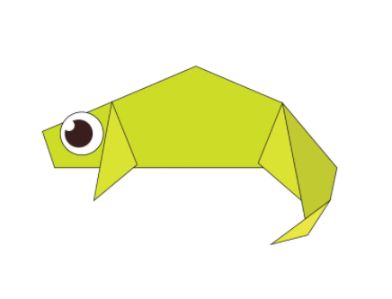
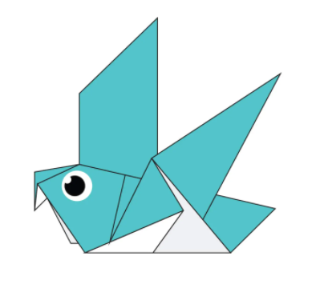

Origami Designs
About Us
Follow Us
These Are Some Of The Origami Designs

Interesting Facts About Camel
- Camels have three sets of eyelids and two rows of eyelashes to keep sand out of their eyes.
- Camels have thick lips which let them forage for thorny plants other animals can't eat.
- There are two types of camels: One humped or “dromedary” camels and two humped Bactrian camels.

Interesting Facts About Chameleon
- Chameleons Are Reptiles That Are Part Of The Iguana Border
- Changing Skin Color Is An Important Part Of Communication Among Chameleons.
- Most Chameleons Have A Prehensile Tail That They Use To Wrap Around Tree Branches.

Interesting Facts About Pigeon
- Pigeons Are Incredibly Complex And Intelligent Animals
- Pigeons Are Renowed For Their Outstanding Navigational Abilities.
- Pigeons Have Excellent Hearing Abilities.